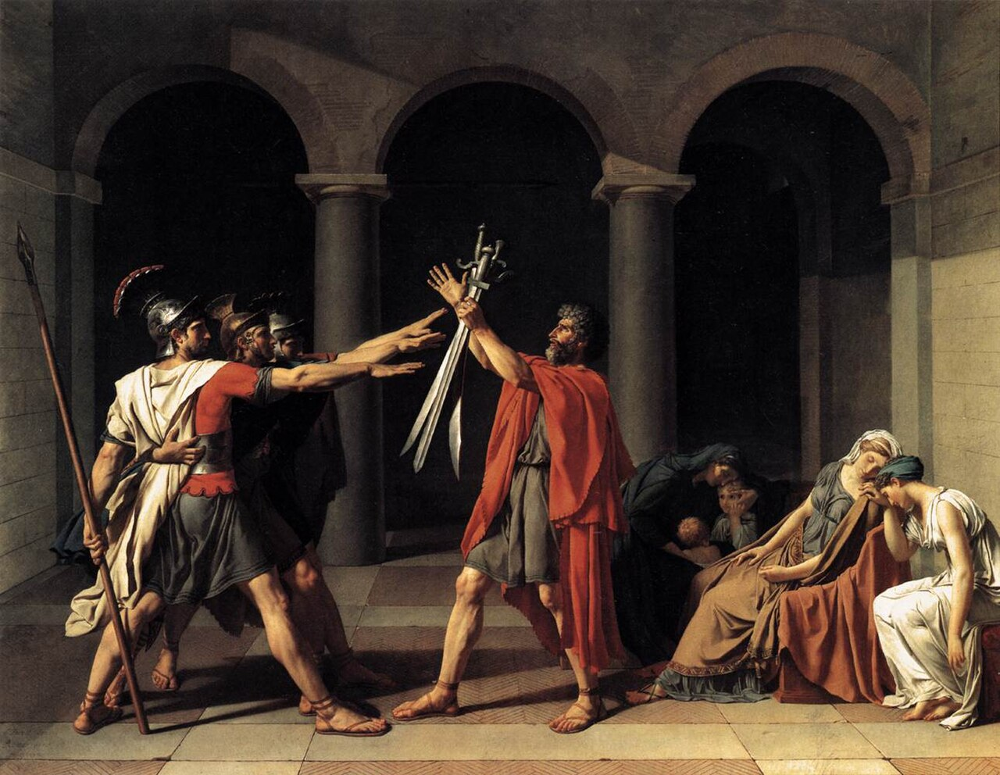
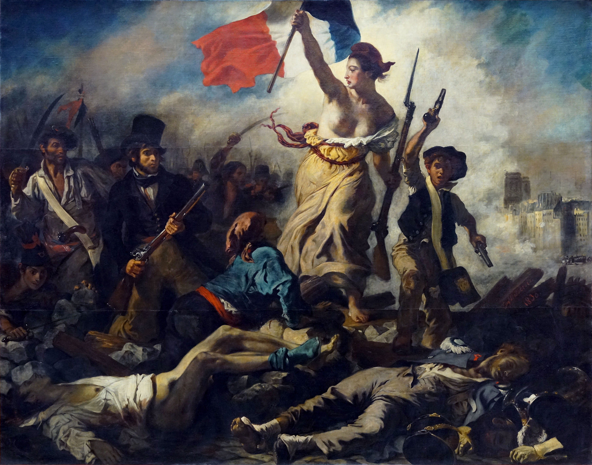
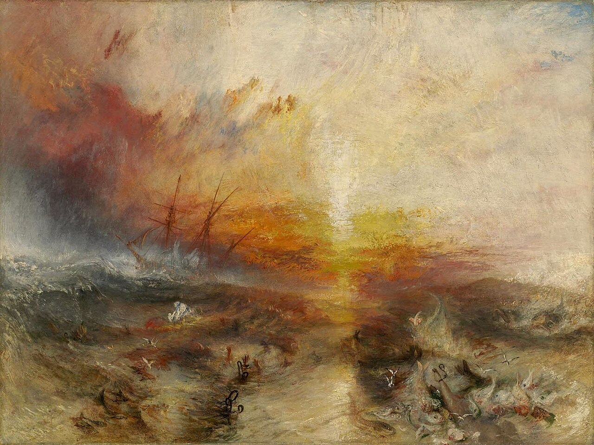
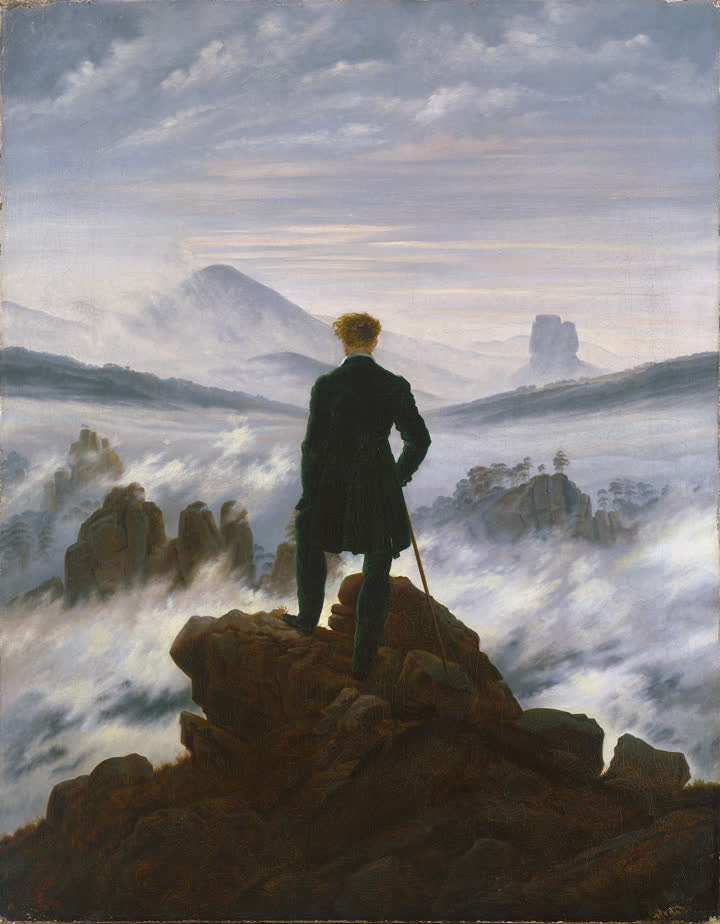
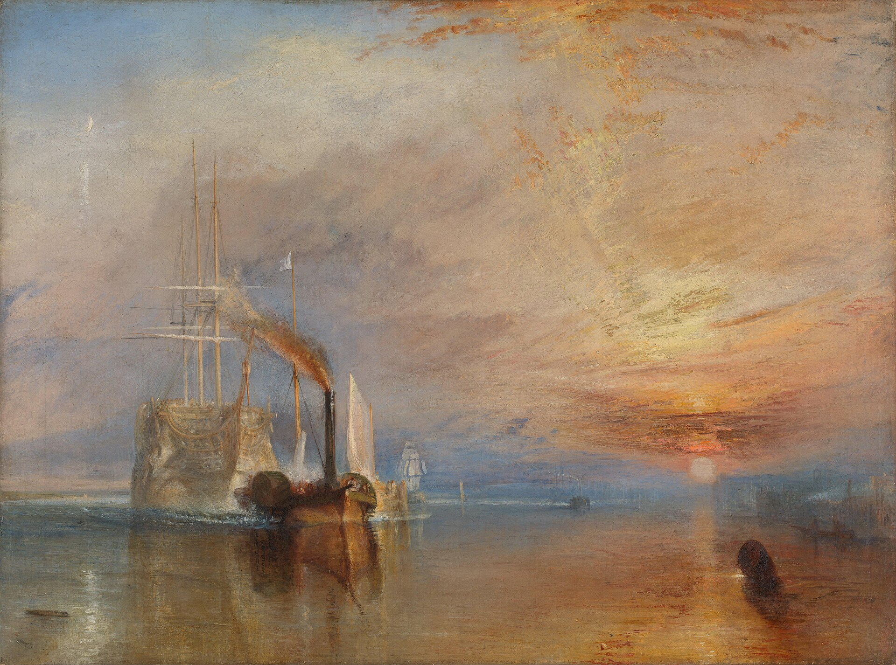
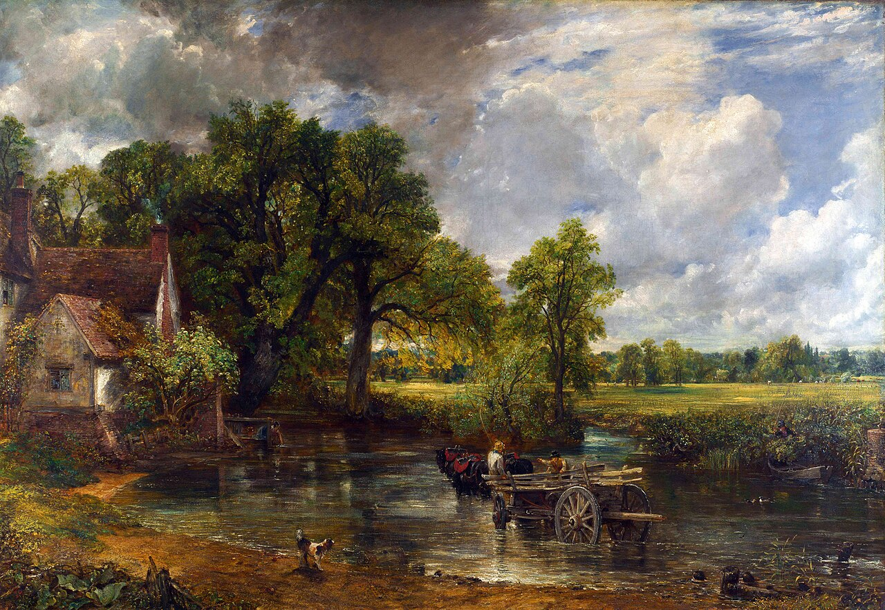
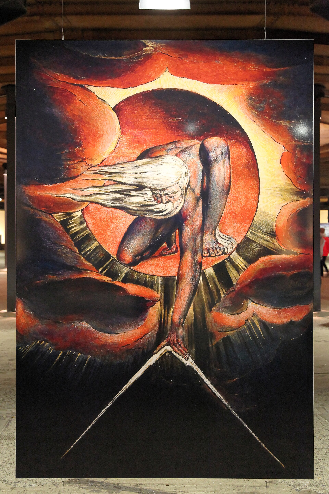
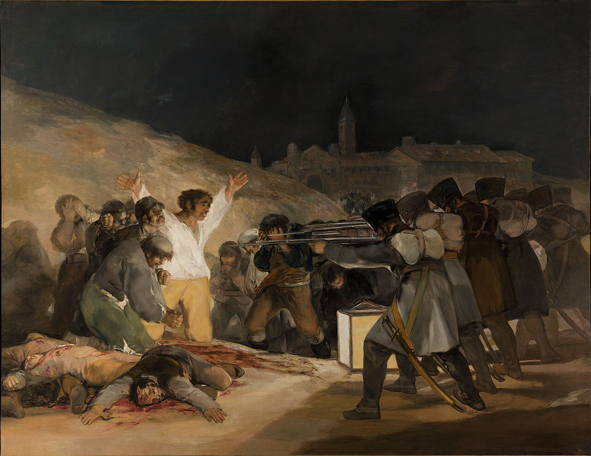

신고전주의
낭만주의는 단순히 “감성적인 그림”을 뜻하지 않는다. 18세기 말과 19세기 전반의 유럽은 프랑스 혁명, 혁명기의 폭력, 나폴레옹 전쟁, 왕정복고, 민족주의, 산업화를 연속적으로 경험했다. 신고전주의가 고대의 이성·질서·시민적 의무를 통해 인간이 따라야 할 규범을 보여주었다면, 낭만주의는 점차 규범으로 설명되지 않는 인간의 감정, 자유, 공포, 상상력, 자연의 압도적 힘과 개인의 내면을 회화의 중심으로 끌어들였다.
상세 학습
낭만주의는 계몽주의적 보편 규칙만으로 설명되지 않는 상상력, 숭고한 자연, 역사, 민족, 혁명과 개인의 내면을 탐구한 국제적 흐름이다. 국가별 정치와 풍경 전통에 따라 모습이 크게 달라진다.
신고전주의의 명료한 보편 규범에 개별 경험과 역사적 특수성을 맞세웠지만 두 흐름은 같은 시대에 겹쳐 존재했다. 사실주의는 낭만적 영웅과 상상에서 동시대의 구체적 사회로 초점을 옮긴다.
흔한 오해: 낭만주의는 사랑 이야기나 아름다운 풍경의 이름이 아니다. 공포, 폐허, 전쟁, 산업, 혁명처럼 근대의 어두운 경험도 핵심 주제다.
한 사건이 낭만주의를 만들었다고 말할 수는 없다. 오히려 신고전주의가 믿었던 “이성·질서·고대의 덕목”만으로는 새 시대의 경험을 충분히 설명하기 어려워졌다는 데 핵심이 있다.
1789년 혁명은 자유를 약속했지만 공포정치와 전쟁도 낳았다. 인간은 이성만으로 움직이지 않는다는 경험이 강해졌다.
나폴레옹 시대는 영웅주의와 동시에 대규모 전쟁·죽음·폐허를 유럽 전역에 남겼다.
예술가는 보편적인 모범보다 개인의 경험·감정·상상력을 중요한 진실로 보기 시작했다.
자연은 인간이 측정하고 지배하는 대상이 아니라 인간을 압도하는 거대한 힘으로 나타난다.
혁명과 민족운동이 과거의 영웅이 아니라 현재 살아 있는 정치와 역사를 그림의 주제로 만든다.

자유와 시민의 권리를 선언하지만 기존 사회질서를 근본적으로 흔든다.
혁명의 이상과 정치적 폭력이 동시에 존재할 수 있다는 충격을 남긴다.
혁명 이념, 제국, 영웅주의, 대규모 전쟁과 민족적 저항이 뒤섞인다.
빈 체제의 보수적 질서와 자유주의·민족주의 운동이 충돌한다.
그리스 독립전쟁 등 민족의 자유를 위한 투쟁이 낭만주의 예술가들의 중요한 주제가 된다.
파리의 실제 거리 혁명이 들라크루아의 《민중을 이끄는 자유의 여신》으로 직접 회화화된다.
카스파르 다비트 프리드리히에게 자연은 풍경의 복제가 아니라 인간의 고독·신앙·죽음·무한을 성찰하는 공간이다.



| 비교 항목 | 신고전주의 | 낭만주의 |
|---|---|---|
| 핵심 질문 | 인간은 어떻게 올바르게 행동해야 하는가? | 인간은 무엇을 느끼며 세계를 어떻게 경험하는가? |
| 중심 가치 | 이성·질서·의무·절제 | 감정·자유·상상력·개성 |
| 시간 | 고대 그리스·로마의 역사 | 중세·이국·현재의 혁명·동시대 사건 |
| 인물 | 도덕적 모범과 영웅 | 고통받는 개인·반항자·혁명가·고독한 인간 |
| 자연 | 질서 있는 배경 | 인간을 압도하는 숭고한 존재 |
| 구도 | 안정적·명료·건축적 | 대각선·비대칭·운동·혼란 |
| 선과 색 | 선과 윤곽이 우선 | 색·빛·붓질과 분위기가 중요 |
| 감정 | 통제된 감정 | 격정·공포·고독·경외·열광 |
| 관람자 | 행동을 판단하고 교훈을 얻는다 | 사건과 자연의 감정을 직접 체험한다 |
| 한 문장 | “자신을 통제하라.” | “느끼고 경험하라.” |
낭만주의는 현실의 혁명과 참사를 적극적으로 다루었지만, 동시에 영웅적 감정, 이국적 세계, 숭고한 자연과 극적인 사건을 선호했다. 1848년 혁명 전후의 다음 세대는 이런 극적·시적인 해석조차 현실을 미화한다고 보기 시작한다. 그 결과 쿠르베 등을 중심으로 사실주의가 등장한다.
| 낭만주의 | → | 사실주의 |
|---|---|---|
| 특별하고 극적인 사건 | → | 평범한 일상과 노동 |
| 영웅·혁명가·고독한 개인 | → | 농민·노동자·보통 사람 |
| 감정의 극대화 | → | 관찰과 사회 현실 |
| 숭고한 자연·이국적 세계 | → | 자신이 실제 살아가는 동시대 사회 |
낭만주의의 공통 철학은 이성만으로 설명할 수 없는 감정·자유·상상력·역사·자연의 힘을 중시하는 것이었다. 그러나 무엇에서 ‘낭만적 진실’을 찾는가는 국가마다 크게 달랐다.
| 국가·지역·세부 사조 | 지역적 특징 | 대표 화가·제작자 | 더 볼 화가 |
|---|---|---|---|
| 독일 — 독일 낭만주의 |
| 카스파 다비드 프리드리히 | 필리프 오토 룽게 |
| 영국 — 영국 낭만주의 |
| 조지프 말로드 윌리엄 터너 | 존 컨스터블, 윌리엄 블레이크 |
| 프랑스 — 프랑스 낭만주의 |
| 외젠 들라크루아 | 테오도르 제리코 |
| 스페인 — 스페인 낭만주의 |
| 프란시스코 고야 | 에우헤니오 루카스 벨라스케스 |
낭만주의는 감정적인 분위기만을 뜻하지 않는다. 계몽주의와 혁명 이후의 인간이 자연, 역사, 전쟁, 민족, 내면, 공포를 어떻게 경험하는가를 묻는 국제적 문화운동이며, 각 국가는 자신이 겪은 정치적 사건과 풍경 전통에 맞추어 서로 다른 낭만주의를 만들었다.
앞부분에서 이미 제리코, 들라크루아, 프리드리히, 터너의 대표 이미지를 보여주었으므로 여기서는 표에는 나오지만 상단 도판이 없던 고야, 컨스터블, 콜, 처치를 골랐다.

선정 이유 프리드리히는 등을 보인 인물을 매개로 관람자가 자연과 자기 내면을 함께 응시하게 만든 독일 낭만주의의 핵심 화가다.
관람자는 방랑자의 뒤에 서서 안개로 가려진 산을 함께 바라본다. 자연은 배경이 아니라 측정할 수 없는 정신적 공간이 되며, 보는 주체의 불확실성이 작품의 중심이 된다.
더 볼 이유 룽게는 독일 낭만주의가 자연과 인간 생애를 종교적 상징 체계로 결합하는 방식을 보여 준다.
빛과 식물, 아이의 형상이 우주의 순환을 암시하는 점에서 독일 낭만주의의 정신적 자연관이 드러난다. 색채 이론과 연작 구상을 통해 회화를 종합적 상징 체계로 만든 것이 룽게만의 특성이다.

선정 이유 터너는 역사적 상징과 빛의 대기를 결합해 영국 낭만주의가 자연뿐 아니라 산업화의 시간도 다룬 방식을 보여 준다.
낡은 범선은 작은 증기선에 끌려가고 거대한 석양은 한 시대의 끝을 장엄하게 비춘다. 세부 형태보다 빛과 색의 분위기가 역사적 감정을 전달하며 이후 인상주의로 이어질 회화적 자유를 예고한다.

더 볼 이유 컨스터블은 영국 낭만주의가 실제 농촌 풍경의 날씨와 빛을 세밀하게 관찰한 축을 보여 준다.
변하는 구름과 습기, 일상적 농촌은 자연을 살아 있는 힘으로 보는 낭만주의의 특징을 드러낸다. 야외 유화 습작의 즉흥성을 큰 완성작으로 옮긴 것이 컨스터블만의 특성이다.

더 볼 이유 블레이크는 영국 낭만주의가 자연 관찰뿐 아니라 개인적 신화와 환시를 통해 이성과 제도의 한계를 비판한 축을 보여 준다.
불타는 원 안에서 우주를 재는 형상은 숭고와 상상력을 중시한 낭만주의를 드러낸다. 시·판화·채색을 직접 결합한 독자적 양각 인쇄는 블레이크만의 특성이다.

선정 이유 들라크루아는 당대 혁명을 알레고리와 현실의 군중이 뒤섞인 색채의 드라마로 만든 프랑스 낭만주의의 기준점이다.
자유의 여신은 실제 바리케이드의 시민들과 함께 시체를 넘어 전진한다. 피라미드 구도와 연기, 붉고 푸른 색의 충돌이 정치적 사건을 집단 감정의 이미지로 바꾼다.
더 볼 이유 제리코는 프랑스 낭만주의가 동시대의 재난을 거대한 역사화로 바꾸는 출발점을 보여 준다.
대각선으로 치솟는 몸과 폭풍우는 극적 감정과 현재 사건을 중시한 낭만주의의 특징을 드러낸다. 실제 생존자와 시신을 연구해 이상적 영웅 대신 절망과 희망이 뒤엉킨 인간 군상을 만든 점은 제리코만의 특성이다.

선정 이유 고야는 영웅적 전쟁화 대신 희생자의 공포와 익명적 폭력을 보여 주어 스페인 낭만주의의 현대성을 대표한다.
흰 셔츠를 입은 남자는 등불 아래 팔을 벌리고, 총살대는 얼굴 없는 기계처럼 반복된다. 승리의 서사보다 폭력의 순간과 인간의 취약성을 앞세워 근대 전쟁 이미지의 새로운 기준을 만들었다.
더 볼 이유 루카스 벨라스케스는 고야 이후 스페인 낭만주의의 어두운 환상과 사회 풍자를 이어 간 화가다.
폭력적 군중과 음울한 분위기는 이성과 질서보다 공포와 억압을 드러내는 스페인 낭만주의의 특징이다. 빠르고 거친 붓질로 장면을 악몽처럼 흐트러뜨린 점은 루카스만의 특성이다.